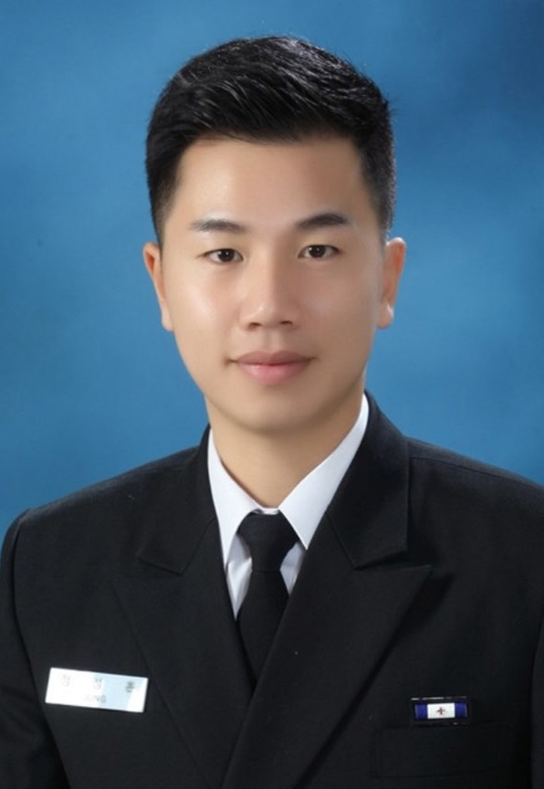

정성훈 교수님 프로필

- 계급:소령
- 학력
-해군사관학교 전기공학 학사 (2009)
-연세대학교 전기전자공학 석사 (2013)
-연세대학교 전기전자공학 박사 (2021)
- 경력
-55전대 화천함 통신관 (09.5 ~ 10.6)
-22전대 제천함 전투정보관 (10.6 ~ 11.7)
-해군사관학교 무기체계공학교관 (13.7 ~ 현재)
- 연구분야
-Localization (신호원 위치추정)
-Neural Networks (신경망)
-Array signal processing (배열신호처리)
- 수업과목
-해군무기체계공학, 캡스턴 설계
- 학술활동
◇ 연구보고서
• 장보고-Ⅲ(Batch-I) 운용요구서 작성 위탁연구, (주)대우조선해양,
2013.9. - 2015.2.
◇ 학술논문
- S. Jung, Y. Kim, Y. Woo, and C. Lee (2020) A two-step approach for DLA-based digital predistortion using an integrated neural network, Signal Processing, 177, 107736
- C. Eom, S. Jung, C. Im, and C. Lee (2020), Fingerprint-and Kalman Filter-based Localization Exploiting Reference Signal Received Power Calibration, IEIE Transactions on Smart Processing & Computing, 9(3), 238-243.
- 임채훈, 정성훈, 엄차현, 이충용 (2020), 실내 핑거프린트 측위를 위한 딥러닝 기반의 초고해상도 RF맵 재구성 기법, 전자공학회 논문지 57(1), 9-14.
◇ 기 타
- 국제학술대회 발표
- S. Jung, C. Im, C. Eom, C. Lee (2019), Noise Reduction after RIR removal for Speech De-reverberation and De-noising, 2019 34th International Technical Conference on Circuits/Systems, Computers and Communications (ITC-CSCC), 1-3.
- S. Jung, C. Im, C. Eom, and C. Lee (2020), A Localization Method with Insufficient RSS samples using Neural Network, 2020 International Conference on Artificial Intelligence in Information and Communication (ICAIIC), 272-275.
- C. Im, S. Jung, C. Eom, and C. Lee(2020), A Deep Autoencoder Approach to Received Signal Strength-Based Localization with Unknown Channel Parameters, 2020 International Conference on ArtificialIntelligence in Information and Communication(ICAIIC), 152-154.
- 국내학술대회 발표
- 정성훈, 노훈동, 이충용 (2012), CEM에 기반한 근접장 환경에서의 다중 신호원 거리 추정에 관한 연구, 대한전자공학회 하계학술대회, 1080-1083.
- 정성훈 (2016), 근접장 신호의 원거리장 근사화 기법에 대한 성능 분석, 대한전자공학회 추계학술대회, 353-356.
- 이성호, 정성훈, 임채훈, 이충용 (2019), 실내 측위 정확도 향상을 위한 딥러닝 기반의 출발 각도 추정기법, 대한전자공학회 추계학술대회, 237-240.
돌아가기